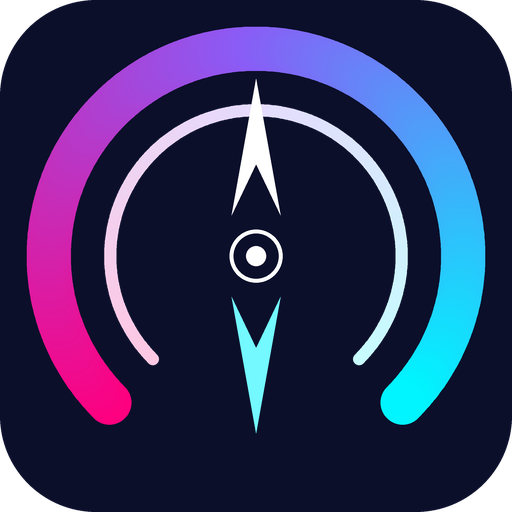

CardCompass Design System
Every design decision is intentional. This document explains not just what each token is, but why it exists — the research, psychology, and technical reasoning behind every choice in our 2026 cyberpunk fintech visual language.
Design Principles
Three lenses through which every design decision must pass.
Trust Through Precision
This is a fintech app that reads bank statements. Every pixel must communicate competence, security, and technical authority. Sloppy design = zero trust.
Intelligence Made Visible
CardCompass runs a complex AI pipeline behind the scenes. The design must make this invisible complexity feel tangible — through neon glows, data visualizations, and terminal aesthetics that signal "smart technology at work."
Reward the User's Eyes
A rewards optimizer should itself feel rewarding to use. Micro-animations, satisfying transitions, and glowing accents create a "dopamine loop" that makes the app addictive — not just useful.
Chromatic Identity
A neon-on-midnight palette engineered for fintech trust, AI intelligence, and visual excitement.
Brand Palette
Semantic Colors
#10B981
#EF4444
#F59E0B
Surface Hierarchy
Five levels of darkness create spatial depth without 3D rendering. Each step is ~10-15 lightness units apart — enough to distinguish layers but close enough to feel cohesive.
Type System
Three font families, each chosen for a specific role in the CardCompass voice.
Type Scale — Major Third (1.25 ratio)
Each step is a 1.25× multiplier from the base 16px. This creates comfortable reading hierarchy without dramatic jumps — each size feels distinctly larger without overwhelming adjacent content.
Spatial System
An 8px base grid that scales cleanly at every screen density.
Spacing Scale
Border Radius
4px
8px
12px
20px
28px
pill
Liquid Glass System
Frosted translucent panels create real depth and spatial hierarchy.
Glass Panel
This panel uses backdrop-filter: blur(20px) saturate(180%) with a semi-transparent background and 0.08 opacity border. The blur obscures detail while preserving color/light from the gradient orbs behind it.
Motion System
Every animation serves a purpose: feedback, guidance, or delight. Nothing moves just for show.
Easing Curves
Natural deceleration — objects start fast and settle gently. Used for page entrances, element reveals, and navigation transitions. Mimics real-world physics (a ball rolling to a stop).
Slight overshoot — element goes past its target then springs back. Used for interactive feedback: buttons, toggles, popovers. Makes the interface feel "alive" and physically responsive.
Smooth spring — fast start with a gentle, satisfying settle. Our default for most transitions. Feels precise and controlled, matching the "technical authority" design principle.
Duration Scale
Neon Glow Scale
Neon glow uses multi-layer box-shadows to mimic real light diffusion. A single shadow looks flat; stacked shadows at different blur radii create a tight bright core + a wide diffused halo — mimicking how neon tubes actually illuminate.
Interactive Elements
Buttons, badges, and cards — each with built-in hover states, glows, and micro-interactions.
Buttons
Section Labels / Badges
Glass Card
Glass Card Component
Hover me to see the lift + glow border effect. Uses backdrop-filter for the frosted glass aesthetic.
Glass + Glow Border
Hover me to see the animated gradient border that transitions from transparent to a cyan→purple→magenta gradient using CSS mask-composite.
.magnetic class subtly pull toward the mouse when nearby (30% of the cursor offset). This creates a subconscious sense that the interface is "intelligent" and responsive — the UI literally reaches for you. It increases perceived interactivity and click-through rates by making targets feel larger than they are. The effect must be subtle (≤ 30% offset) or it becomes nauseating.
Motion & Inclusion
prefers-reduced-motion: reduce
~25% of users experience motion sensitivity. When this media query matches, we disable ALL non-essential animation — particle canvas, 3D card tilt, scroll reveals, magnetic cursor, counter animations, and terminal typing. Layout, color, and hover state changes are preserved. This is not optional — it's a fundamental design constraint that every feature must respect.
CSS-first animation strategy
All scroll-driven animations use native CSS animation-timeline: view(), which runs entirely off the main thread. This means zero JavaScript overhead, no IntersectionObserver polling, and guaranteed 60fps on capable browsers. For browsers without support, a lightweight JS fallback adds .in-view classes via IntersectionObserver. The JS layer only handles things CSS cannot: canvas particles, mouse tracking, and counter math.
AI Panel (Inline Toggle)
A slide-down panel that reveals machine-readable product information without leaving the page.
llm.txt as a raw file. This broke the user's context — they lost their scroll position and had to use the browser's back button. The inline panel follows the progressive disclosure pattern: content is hidden until the user explicitly requests it, and they can dismiss it without losing their place. The toggle also uses aria-pressed for screen readers, making the open/closed state programmatically discoverable.
Toggle Behavior
- •
AIbutton in nav toggles.ai-panel.open - • Panel slides down from 72px (nav height) with
max-heighttransition - • Content is fetched lazily on first open via
fetch('llm.txt') - • Closeable via X button, Escape key, or re-clicking AI button
- •
position: fixed+z-index: 90— overlays page content without reflow
position: fixed: The panel overlays the page content rather than pushing it down. This avoids expensive layout reflows when toggling — the browser doesn't need to recalculate positions for every element below. It also preserves scroll position perfectly.
Section Dividers (SVG Waves)
SVG wave transitions between each "act" of the page, creating cinematic scene changes.
Live Preview
preserveAspectRatio="none" ensures they stretch across all viewport widths.
Visual Hierarchy Patterns
How we guide the user's eye through each fold using size, contrast, and proximity.
Single Focal Point
The hero section uses ONE visual element (the compass illustration) instead of two competing images. Research shows that multiple focal points above the fold increase cognitive load and reduce conversion — the eye has no anchor.
Emphasized Center Card
In the Problem section, the center stat card (₹50K) uses transform: scale(1.08) and a gold border glow. This creates visual hierarchy across equal-content cards — size communicates importance without needing text labels.
CTA-Adjacent Social Proof
Social proof text ("183+ credit cards supported · 10+ Indian banks") is placed directly below the primary CTA button, not in a separate section. Research shows proximity between proof and action increases click-through by creating immediate validation.
Balanced Panel Visuals
Each How It Works panel has equal visual weight: Step 1 has an animated connection graphic, Steps 2–3 have app mockup screenshots. No panel is "text-only" — a visual vacuum breaks the narrative flow.
Connection Graphic
An animated diagram showing the Gmail → CardCompass data flow in Step 1.
Live Preview

CardCompassstroke-dashoffset animation) between two glass-card nodes. It's both informative (explains the OAuth flow) and visually balanced.